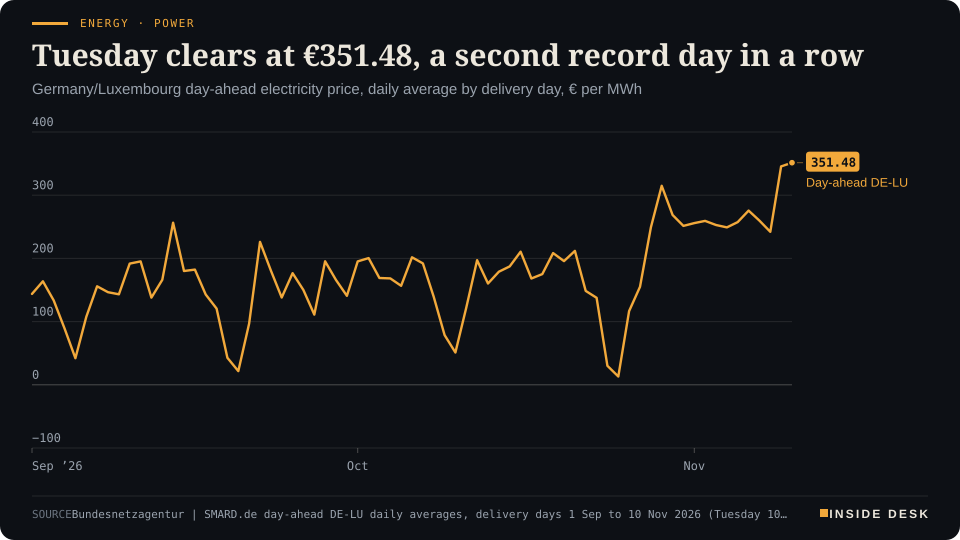
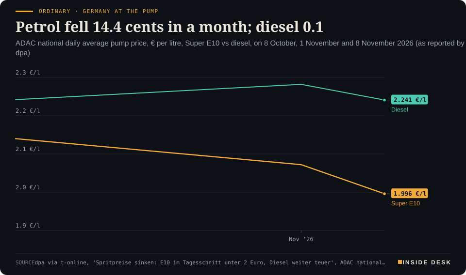

Inside Desk ePaper, Evening ePaper · Mon 9 Nov 2026
Monday, 9 November 2026Always free
Inside Desk
Evening ePaperPublished 17:30 CET · Berlin
Lead · Tech & Compute
Nvidia's directors are investigating reports that Jensen Huang was the target of a foreign intelligence effort. The same weekend, the small US office meant to test AI models was reported drifting towards the White House. Only one of those checks comes with a calendar.
Nvidia's board opens a file on its own chief while Washington's AI-safety office runs without a lamp. Elsewhere: Tuesday's German power at €351.48, banks lift the DAX back above 26,000, ships hit near Hormuz while Brent falls, Aigner nominated, COP31 adopts its agenda, and a hospital winter plan that does its own arithmetic.
Nvidia's board opens a file on its own chief while Washington's AI-safety office runs without a lamp. Elsewhere: Tuesday's German power at €351.48, banks lift the DAX back above 26,000, ships hit near Hormuz while Brent falls, Aigner nominated, COP31 adopts its agenda, and a hospital winter plan that does its own arithmetic.
11 edition pieces · 11 desks · Published 17:30 CET, 9 November 2026
24 ePaper extras, added , 9 November. They appear only in the ePaper and carry their own time.
17:30 Evening ePaper, updated live until 22:30 with an “Updated” time and a Latest page
Sun 10:00 The Sunday Magazine
Berlin time. Every issue is free.
How to read it
Swipe, use the arrow keys or the page strip. Tap any headline for the reading view. Press / to search, t for contents, +/− to zoom. Download the PDF.
LatestInside Desk · Evening ePaper9 November 2026
Latest
Live: this page and the issue are updated until 22:30 Berlin time.
Markets: Wall Street closes up 2.41% (S&P 500); Brent settles 5.85% lower at $92.57
Markets: Xetra closes DAX up 1.73% at 26,267, Stoxx 600 up 1.26% at 656.52; Brent down 4.6%
LeadInside Desk · Evening ePaper9 November 2026
Tech & Compute · Lead · 4 min
Nvidia's directors are investigating reports that Jensen Huang was the target of a foreign intelligence effort. The same weekend, the small US office meant to test AI models was reported drifting towards the White House. Only one of those checks comes with a calendar.
The tech story of the day is not a chip, a model or a data centre. It is two pieces of governance, one private and one public, tested in the same weekend. You can read both as drama. It is more useful to read them as plumbing, and to ask which pipe still has a valve on it.
The board. Nvidia’s board said on Sunday that it has opened an independent investigation after reports that its chief executive, Jensen Huang, was the “target of a foreign intelligence effort”1. The announcement followed Huang’s acknowledgement to the board that he had been intimate with a business executive whom, according to The New York Times, US intelligence determined was gathering information for Beijing2. The board said there is no reason to believe national security or Nvidia secrets were compromised, that Huang supports the investigation and that he will remain chief executive2. Huang “fully supports the review and has committed to cooperating with it,” the company said1. In a letter to staff he apologised to his family and said he had “fallen short” of his responsibility to colleagues, the board, partners and shareholders1.
China’s Foreign Ministry called the spying claims unsubstantiated and a smear campaign against Beijing2. The underlying controversy, AP notes, is whether Huang drove sales of advanced chips to China despite US restrictions; he had lobbied President Trump to loosen them2. None of that is settled, and this desk will not settle it for you. What is settled is the procedure: a board has opened a file on its own chief.
The price of not knowing. Nvidia shares fell about 5% on Monday12. Dan Ives of Yorkville Ives & Co. told CNBC that any talk of replacing Huang is “comedy”, but that the board review “creates a huge uncertainty”1. Joachim Klement of Panmure Liberum said the impact so far is contained to Nvidia; other US chipmakers including AMD, Marvell, Arm, Intel and Qualcomm rose on Monday, and Asian tech shares rebounded from Friday’s losses1. That split is the market doing something sensible: pricing a governance question at the one company that has it, rather than at the whole industry. Nothing here is investment advice.
The noise around the review is the usual. The president praised Huang’s leadership and said “you have to hear it”1. A Sequoia partner called him irreplaceable, and Elon Musk agreed1. Testimonials are not evidence in either direction. The useful fact in the CNBC report is a date: Nvidia reports third-quarter earnings on 17 November1. Earnings calls are dull by design, and that is their virtue. Analysts ask, executives answer on the record, and lawyers read the transcript.
LeadInside Desk · Evening ePaper9 November 2026
The office. Now the public pipe. The Center for Advancing Innovation and Standards for Super Intelligence, CAISSI, is the small Commerce Department division charged with assessing the safety of new AI systems3. According to two former government officials who spoke to AP, its staff were recently asked to report informally to a White House office3. It has no permanent leader: a director hired in April was fired within days, his replacement lasted a few months, and the head of its parent institute is acting director3. It has stopped publishing its research, and Congress began asking why in August3. Its budget is $10 million a year, about one-eighth of its UK counterpart’s, AP reports3.
Critics told AP the arrangement risks politicising safety findings; others argue that proximity to the president could bring the office more prominence and perhaps more money3. The White House did not answer questions about CAISSI, pointing instead to the president’s new Super Intelligence Force and a commissioned risk report3. Sayash Kapoor of UC Berkeley made the technical point that matters most: checking only “the final answer” of an AI agent can make a failed task look solved; “unless you’re looking at the entire set of steps,” you will not see the mistake3.
Why put them side by side. Both stories are about whether someone outside the decision can check it. Nvidia’s board has a mandate, a subject and, through the earnings calendar, a public moment where it will be asked. CAISSI, as AP describes it, has lost its leader, its publication schedule and some of its distance. One check has a reporting line; the other is losing one.
The contrarian reading is not that the chip giant is doomed or that AI safety has been abolished. It is that institutions do their work through boring instruments, an independent review, a quarterly call, a published test report, a modest budget line. When you hear speeches this week about leadership in AI, ask a plainer question: who publishes the findings, and on what date?
Geo-economicsInside Desk · Evening ePaper9 November 2026
Geo-economics · 2 min
The headlines say mines, missiles and blockades. The ledger that matters is the daily transit count, and it is still far below normal.
The weekend in the Strait of Hormuz produced claims from both sides. Iran’s Revolutionary Guards Navy said two oil tankers caught fire after hitting mines while using an “unauthorised route”, and the Fars agency reported a third tanker hit by an explosion1. The US military said its air force fired at the stern of a commercial vessel in the Gulf of Oman and disabled it as it tried to pass the US blockade of Iranian ports1. Reuters could not confirm any of the reported strikes1.
One ship, twice. Open-source analysts have tentatively identified the burning tanker off Khasab, on Oman’s Musandam peninsula, as the Navig8 Messi, an ADNOC-chartered product tanker2. It was hit once before in August, repaired, and sent back into the same trade lane2. Its crew was evacuated with no injuries reported, and at least two firefighting tugs were working on the blaze2. US Central Command said separately that it disabled the Iran-linked bulker Huda, built in 1999, after its crew ignored warnings2.
The number that matters. The UK Maritime Trade Operations centre describes Iranian activity in the strait as constant, from drone overflights to VHF hailing2. Traffic is running at single to low double-digit transits a day, well below the escorted convoys seen early last week2. That is the figure that moves cargoes, freight rates and, eventually, the price of what you burn at home.
The paper market looked the other way. Brent fell $4.09, or 4.2%, to $94.23 a barrel by 14:17 CET today after President Trump said renewed strikes on Iran were “highly unlikely” while talks progressed3. UBS’s Giovanni Staunovo pointed to weakness in the physical market from still-elevated Middle East flows3. Futures, ships and speeches are telling three different stories this evening; only the ships can be counted.
For you, the dull lesson holds: watch the transit tallies and the repair yards, not the claims. A tanker that is repaired and sent back is an act of stubborn commerce. Nothing here is investment advice.
Geo-economics · Short item · ePaper extra, added
An Iranian proposal to reopen Hormuz is heading to Washington via Qatar. Its terms are reported, not signed.
Qatar’s prime minister was heading to the White House on Monday with an Iranian proposal for an interim deal to reopen the Strait of Hormuz, OilPrice.com reported1. According to two diplomatic sources quoted by Israeli media, Tehran would reopen the strait and stop attacking Gulf tankers; Washington would lift its naval and economic blockade and release $8 billion of Iranian funds frozen in Qatar1. Iran would drop its demand to control the strait and charge transit fees, but still refuses to put its nuclear programme on the table1.
Moldova switched on the 400 kV Vulcănești–Chișinău power line on Sunday, with President Maia Sandu and EU Enlargement Commissioner Marta Kos present1. The 158-kilometre line and two modernised substations tie the country directly to the Romanian market and the European grid1. It cost €61 million in World Bank financing, under a loan approved in 2019 after talks that began in 20131. Desk arithmetic: roughly €386,000 per kilometre.
“Moldova buys zero Russian gas,” Sandu wrote2. Two more links to Romania are being prepared, including the Bălți–Suceava line, worth about €77 million1. Thirteen years from first talk to live current is slow. It is also how dependence ends: one substation at a time.
Markets & MacroInside Desk · Evening ePaper9 November 2026
Markets & Macro · 2 min
Monday's rebound was led by the dullest part of the index: lenders with quarterly numbers and a merger proposal. The chip story still needs invoices.
Friday’s slide ended on Monday morning. By midday Reuters had the DAX up 1.1% at 26,102, back above the 26,000 mark, after losing nearly 2% on Friday; the Euro Stoxx 50 was up 1.3%1. Sharecast had the Stoxx 600 up 0.90% at 654 at 13:17 CET2. These are intraday readings, not closes; the settled close comes in the 19:30 update.
Look at who led. Not the chips, but the banks. Europe’s banking index rose 2.4%, Reuters reported1. Crédit Agricole proposed merging its Italian business with Banco BPM, which would create Italy’s third-largest bank; Banco BPM shares were up almost 12% at one point1,2. UniCredit beat forecasts for third-quarter earnings, raised its full-year guidance and rose 6.3%1,2. In Frankfurt, Commerzbank topped the DAX with a gain of 3.8% and Deutsche Bank added 2.8%1.
That is a different kind of rally from the one that broke last week. A bank result is a ledger: loans, deposits, trading income, provisions. It can be checked against the next one. Jochen Stanzl of Consorsbank put the mood in one phrase, a “growing AI fatigue” among investors (desk translation), who no longer pay any valuation for big promises but “want to see results”1.
The tech side had its own reminder. Nvidia opened an internal investigation after its chief executive Jensen Huang admitted an affair with a woman reported to be suspected of spying for China, and the shares fell more than 4% in US premarket trading1,2. Chris Weston of Pepperstone said he did not believe Huang would be replaced1. You need no view on that. …
Markets & Macro · Short item · ePaper extra, added
Hope of a diplomatic end to the Iran war took another slice off oil. The analysts quoted were careful not to buy the whole story.
Oil fell again on Monday. Reuters reported North Sea Brent and US WTI each down around 3%, at $95.08 and $88.11 a barrel, after Brent had already lost 16% last week1. The trigger was diplomacy: US President Donald Trump called new attacks on Iran very unlikely as long as talks to end the conflict were progressing1.
The caution came in the same report. “The underlying geopolitical risks remain high, and the possibility of renewed military escalation cannot be ruled out,” said Sugandha Sachdeva of SS WealthStreet (desk translation from the German Reuters copy)1. A barrel priced on hope is a barrel that can be repriced on a headline.
The currency market read the day as risk-on. The dollar index lost 0.5% to 101.83 points after its recent rally1. Oil is priced in dollars, so a softer dollar and a cheaper barrel point the same way for anyone paying in euros.
You will meet that at the pump only slowly. The ADAC’s national average for E10 on Sunday was already below €2, at €1.996 a litre, and the first Tankerkönig figures on Monday morning pointed slightly lower2. A week of falling oil is a fact; a lasting peace is still a negotiation. Nothing here is investment advice.
Markets & MacroInside Desk · Evening ePaper9 November 2026
Markets & Macro · Brief · ePaper extra, added
Not everything rose on Monday. Hochtief shares fell as much as 7.1% after the Spanish infrastructure group ACS denied considering a full takeover of the German builder1. A bid premium that was never offered is easy to lose. Hannover Re also slipped even though it reaffirmed its 2026 profit target; a trader told Reuters investors disliked the lower solvency ratio1. For an insurer, that ratio is the cushion between a bad year and a bad decade, and the market read it before the headline. Nothing here is investment advice.
Markets & Macro · Brief · ePaper extra, added
Xetra closed the DAX 1.73% higher at 26,267.19, above the midday 26,102 in the evening note; the Euro Stoxx 50 gained 1.9%1. The Stoxx 600 settled 1.26% higher at 656.52, with defence up 4.2% and euro-area banks up 3.1%2. Hochtief closed only 1.3% lower, Hannover Re 1.4% lower1. Brent was down 4.6% at $93.77 by early evening, below the $95.08 quoted at 17:303. IG’s Salah-Eddine Bouhmidi warned that the rebound still stands “auf wackligen Füssen”, on shaky feet (desk translation)1. Nothing here is investment advice.
Markets & Macro · Brief · ePaper extra, added
Reuters put the S&P 500 up 2.41% at 7,554.67, the Dow up 2.21% at 52,417.54 and the Nasdaq up 2.67% at 25,235.49; all 11 S&P sectors rose, while Nvidia fell about 6%1. Front-month Brent settled 5.85% lower at $92.57, its lowest settlement since 31 August and 21.31% down for the month so far2. It kept falling after settlement, more than $7 down on the day by Reuters’ last reading3. October US consumer prices are due on Tuesday1. A cheaper barrel reaches the pump by invoice, not by headline. Nothing here is investment advice.
Politics & InstitutionsInside Desk · Evening ePaper9 November 2026
Politics & Institutions · 2 min
The CDU made it formal at lunchtime. The useful news was not the speech but who stood behind it.
It is official. The CDU presidium and federal executive nominated Ilse Aigner, president of the Bavarian state parliament, on Monday morning, and she and Chancellor Friedrich Merz faced the press at the Konrad-Adenauer-Haus at lunchtime1,2. Merz said Germany would gain a president “with dignity and with heart”1. Aigner, 61, joked that “the chancellor made it exciting, for me too”, and then said what she wanted the job to be: “I want to be a candidate of the centre”1.
The promise was about language. “My language will be clear and understandable,” she said, and she described herself as part of the citizens rather than above them1. She also struck the note this desk likes best: “Yes, we have problems in this country, but Germany is not a problem case”1. Merz tied the timing to the date itself, saying 9 November reminds Germans that democracy must be protected and “lives from those who carry it”2.
The support arrived before the vote. SPD general secretary Tim Klüssendorf said Aigner can bring people together across party lines; the SPD presidium had already backed her1,3. Greens leader Franziska Brantner said her party was convinced Aigner could fill the role, and that putting up a rival or rejecting a Union proposal outright would not be the right answer “given the times we are in”1. The FAZ concludes that her election on 30 January is very likely, and by a broad majority2. Bundestag President Julia Klöckner noted that Aigner’s election would put women in the two highest offices of state for the first time1.
Who claimed the win. CSU leader Markus Söder called it “a historic day for the CSU”; he first floated her name in April1. The FAZ reports that Söder books the outcome as his success2. That is ordinary party bookkeeping, and harmless.
For you, the interesting part is the dull one. Three parties, in public and on the record, chose not to fight over the one office designed to be above the fight. That is the machinery working.
Politics & Institutions · Short item · ePaper extra, added
Congress returns after the Democratic landslide. The counting is nearly done; the calendar is not.
Washington’s lame-duck session opened on Monday with the map nearly drawn. Democrats control at least 54 Senate seats, with Alaska and Mississippi still uncalled, according to Punchbowl News1. In Mississippi, Democrat Scott Colom leads Senator Cindy Hyde-Smith by 2,574 votes, with just under 2,900 ballots outstanding and 75 of 82 counties certified unofficially; counties have until Friday1. In Alaska, Mary Peltola leads Senator Dan Sullivan by 637 votes, and a ranked-choice count could leave the result weeks away1.
In the House, 19 races remain uncalled; Democrats hold at least 254 seats for the next Congress and lead in six of the outstanding races1. Several seats in Florida and North Carolina could go to recounts1.
The diary now matters more than the map. House and Senate Republicans hold leadership elections on Tuesday1. …
This is a budget week in Berlin. On Wednesday the Bundestag’s budget committee takes the parliament’s own budget and then the finance ministry’s, and on Thursday it begins the Bereinigungssitzung, the final session in which every departmental plan is called up again and debated with ministers1. The Bundestag’s own information service expects it to run “probably into the early hours of Friday”1. The 2027 budget accompanying act is also due for final committee discussion on Thursday1.
The coalition carries two quarrels into the room: the sugar tax and the plastics tax, where Union MPs are breaking ranks although the revenue was already pencilled in1. The final plenary vote is planned for the week of 23–27 November1. It is the least glamorous meeting of the year, and it decides more than most speeches do.
Psychology & BehaviourInside Desk · Evening ePaper9 November 2026
Psychology & Behaviour · 2 min
A Nature study pooled 32 research groups to test a favourite idea about emotional control. The brain areas busy during reappraisal did not predict who benefits from it. That is a result, not a failure.
The Annex reads the method behind the headline. This week’s paper, published in Nature and reported by ScienceAlert, tests a tidy story many textbooks tell: when you reinterpret an upsetting event, the front of your brain does the calming, so the people whose front brains work hardest should calm down best1.
The design. Psychologists call the strategy cognitive reappraisal: changing a feeling by seeing the situation differently1. The team combined results from 32 research groups, 40 datasets and up to 2,175 participants, all following a standardised analysis plan registered in advance1. Participants viewed upsetting pictures in an fMRI scanner, simply watching some and trying to reinterpret others1. Three measures were compared with brain activity: how much relief people reported in the task, how often they said they used reappraisal in daily life, and how much activity fell in the amygdala, a structure involved in emotional responses1.
The results. The measures did not line up as expected. Questionnaire scores showed no significant link with either relief in the task or reduced amygdala activity1. People who reported more relief did show larger amygdala reductions, but the link was very weak; the authors calculated a study would need 1,105 participants for an 80% chance of detecting it1. None of the three measures showed the expected link with activity in the established prefrontal networks, which were engaged both when people felt negative emotions and when they tried to change them1. “Simply engaging the brain regions involved in reappraisal does not necessarily mean that the reappraisal is personally meaningful or emotionally effective,” said Maurizio Sicorello of Germany’s Central Institute of Mental Health1.
The footnotes that matter. The samples were non-clinical adults, so the results may not carry over to people with more severe symptoms1. …
Psychology & Behaviour · Short item · ePaper extra, added
People with psychosis are often kept away from trauma therapy for fear of making things worse. A Dutch trial tested the fear.
Clinicians have long hesitated to offer trauma therapy to people with psychotic disorders, fearing that revisiting traumatic memories could worsen voices or paranoia, and such patients are still regularly excluded1. Researchers at Vrije Universiteit Amsterdam and Parnassia Group checked whether the reluctance was justified1.
They followed 162 people with both PTSD and a psychotic disorder. Alongside usual psychosis care, participants were randomly assigned to prolonged exposure therapy, EMDR or cognitive therapy, while a fourth group received no trauma therapy during the study1. …
Mental Health America released its annual state rankings on Monday, built from 17 measures of mostly federal data collected through 20241. Maryland, Massachusetts and Vermont ranked best; Nevada, Alabama and Wyoming lowest, with Nevada last for a third year1. Nationally, 23.40% of adults had any mental illness in 2024, and the prevalence of mental health concerns did not change from 2021 to 20241. The access figures moved the wrong way: 27.65% of adults with 14 or more mentally unhealthy days a month could not see a doctor because of cost, a share rising since 2021, and 65.20% of those who went without needed treatment cited cost1. Alabama has 640 people per mental health provider, Massachusetts 1301. For you: a steady prevalence with a rising cost barrier is a problem of invoices and staffing, which is to say a solvable one.
Energy & IndustryInside Desk · Evening ePaper9 November 2026
Energy & Industry · 2 min
Monday's evening spike does not repeat. What rises instead is the dull part of the day: the night, the noon, the shoulders. That is where most of your kilowatt hours sit.
Today’s day-ahead auction set Tuesday’s German-Luxembourg power price at a daily average of €351.48 per megawatt hour, SMARD’s data show1. That is €5.84 above Monday’s €345.64, which this desk called the dearest delivery day of the year this morning. Tuesday now takes that title on the same series1.
Energy · PowerTuesday clears at €351.48, a second record day in a rowGermany/Luxembourg day-ahead electricity price, daily average by delivery day, € per MWh

Line chart of the daily average German-Luxembourg day-ahead electricity price from 1 September to 10 November 2026, in euros per megawatt hour. It falls to €13.12 on Sunday 25 October during the storm, climbs to €314.85 on Thursday 29 October, stays between €242.13 and €275.64 from 2 to 8 November, and jumps to €345.64 on Monday 9 November. The latest value is €351.48 for delivery on Tuesday 10 November, the highest daily average of 2026 on the SMARD series, €5.84 above Monday and about 3.2 times the €109.89 of 10 November 2025.
Source: Bundesnetzagentur | SMARD.de day-ahead DE-LU daily averages, delivery days 1 Sep to 10 Nov 2026 (Tuesday 10 Nov €351.48, auction of 9 Nov), retrieved 9 Nov 2026 · CC BY 4.0 · CSV
The average hides a change of shape. Monday’s dearest hour was 17:00, at €644.181. Tuesday’s is 08:00, at €494.05 — about €150 lower1. The evening block that scared everyone on Monday has flattened. What has risen is everything else. Between midnight and 05:00 on Monday, hourly prices sat between €223.27 and €231.49; on Tuesday the same hours clear between €256.44 and €268.021. The noon trough is higher too: €315.09 at 12:00 on Monday, €354.09 on Tuesday1.
Desk arithmetic: Tuesday has eight hours at or above €400 (07:00–10:00 and 15:00–18:00), against five on Monday1. …
Energy & Industry · Short item · ePaper extra, added
Diplomacy took dollars off crude on Monday. Reports of ships hit near Hormuz put euros back on European gas.
Two energy markets read the same weekend differently on Monday. Reuters had Brent down around 3% at $95.08 a barrel, after President Donald Trump called new attacks on Iran very unlikely as long as talks progressed3. European gas went the other way. The Dutch TTF front-month contract rose 1.4% to €86.70 per megawatt hour in morning trade, and Britain’s NBP climbed 2% to 217 pence a therm, Investing.com reported1.
The reason was physical, not rhetorical. …
Energy & Industry · Brief · ePaper extra, added
If your electricity price follows the exchange, Tuesday’s day-ahead auction has already written your timetable. The cheapest full hour is 23:00, at €219.66 per megawatt hour; the dearest is 08:00, at €494.051. The night before is not much help: the hours from midnight to 05:00 all clear between €256.44 and €268.021. Desk arithmetic: shifting a load from 08:00 to 23:00 cuts its wholesale cost by more than half, about 27 cents a kilowatt hour (€274.39 per megawatt hour) before taxes, levies and network fees. The washing machine is the most reliable grid tool you own.
Money, FX & CommitteesInside Desk · Evening ePaper9 November 2026
Money, FX & Committees · Podium vs Print · 2 min
Brussels says energy prices are very high. The futures table agrees they are volatile. Whether they are very high depends on which price you read.
Podium
“…energy prices, which remain very high and volatile.”
Valdis Dombrovskis, European Commissioner for the economy, Eurogroup press conference, Brussels, Monday 9 November 2026
Print€87.46/MWh
Up 2.2% on the day, down 7.8% on the week, and above only 43% of the prices of the last twelve months.
ICE Endex Dutch TTF December gas futures, as tabulated by Agroprices.gr, Monday 9 November 2026, intraday (delayed)
The podium. After Monday’s Eurogroup, Valdis Dombrovskis said growth data this year had been “more positive than previously expected”, but that the outlook “remains clouded in uncertainty”, especially when it comes to energy prices, “which remain very high and volatile”1. He asked for “very prudent fiscal policies”, noting that deficits remain high and interest-rate spreads have widened1.
The print. Take Europe’s benchmark gas contract. The December TTF future stood at €87.46 per megawatt hour in a delayed Monday reading, up 2.2% from Friday’s €85.592. In the fortnight before, it moved by more than 5% in a single session three times, from a fall of 8.7% on 2 November to a rise of 6.2% on 30 October2. Brent lost 16% last week and about 3% more on Monday, to $95.084. That is “volatile”, printed.
The gap. “Very high” is harder to find in the same table. Agroprices ranks Monday’s gas price as mid-range: above 43% of the prices of the last twelve months, within a twelve-month range it shows as €78.08 to €103.942. Desk arithmetic: the price is about €16.48 below that twelve-month high. Where “very high” does show up is further down the chain. Tomorrow’s German day-ahead power price averages €351.48 per megawatt hour, a record for the year on SMARD’s series3. The commissioner’s adjective fits the kilowatt hour better than the molecule.
For you. A minister’s word is a mood; a ranked price is a fact you can plan around. A household tariff is not the futures price, but suppliers buy on these markets, and that cost reaches contracts over time. If you are renewing a contract, look at the price guarantee, not the press conference. Nothing here is investment advice.
Money, FX & Committees · Short item · ePaper extra, added
Brussels wants more, better and joint defence spending. The flexibility to pay for it ends in 2028, which is not far away for a budget.
Monday’s Eurogroup spent part of its session with NATO Secretary-General Mark Rutte, and Valdis Dombrovskis summed it up in three sentences: “We need to spend more. We need to spend better. And we need to spend together.”1
The numbers behind the first sentence are already moving. EU defence spending is rising “steadily”, from around 1.2% of GDP in 2021 to an expected 2% by 2027, the commissioner said1. Desk arithmetic: that is roughly a two-thirds increase as a share of the economy in six years.
The second and third sentences are about the machinery. Dombrovskis wants more money for defence research and development, which he said can lift productivity in the wider economy where technologies have civilian uses too1. And he called European procurement “too fragmented”, with member states still largely buying nationally; joint buying would be “key” to strengthening production capacity1.
Then the invoice. Fiscal space is limited, he said, and member states will need to “gradually reprioritise their national budgets”1. The national escape clause gives flexibility until 2028, “so planning for that reprioritisation cannot wait”1. In plain words: the extra room is temporary, and the choices about what else gives must be made now.
For you, this is not abstract. Reprioritising a budget means something else is funded less. Watch the 24 November Semester package, where Brussels assesses each country’s plans against the rules1.
Money, FX & CommitteesInside Desk · Evening ePaper9 November 2026
Money, FX & Committees · Brief · ePaper extra, added
Valdis Dombrovskis told Monday’s Eurogroup press conference that the co-legislators negotiating the digital euro “are moving at a steady pace”, with the aim of an agreement by the end of this year1. He called the goal “within reach” but said it needs “constructive engagement from all sides”1. Ministers also heard from the chairs of the ECB’s Supervisory Board and the Single Resolution Board; their assessment, he said, “confirms that the European banking sector remains financially sound”1. The money in your current account rests on exactly this kind of unexciting assurance.
Ordinary & Inherited LifeInside Desk · Evening ePaper9 November 2026
Ordinary & Inherited Life · 2 min
Petrol has fallen 14 cents in a month. Diesel has not moved. If your car runs on the second, the oil news of the week has mostly passed you by.
The ledger.
- Super E10, ADAC national daily average for Sunday: €1.996 a litre, 7.6 cents below a week earlier1.
- Diesel, same day: €2.241 a litre, down only 4.1 cents1.
- E10 on 8 October: €2.140. Diesel on 8 October: €2.2421.
- Desk arithmetic: in a month E10 fell 14.4 cents; diesel fell 0.1 cents.
Ordinary · Germany at the pumpPetrol fell 14.4 cents in a month; diesel 0.1ADAC national daily average pump price, € per litre, Super E10 vs diesel, on 8 October, 1 November and 8 November 2026 (as reported by dpa)

Line chart of German national average pump prices on three dates. Super E10 falls from €2.140 a litre on 8 October to about €2.072 on 1 November and €1.996 on Sunday 8 November 2026, the latest value. Diesel goes from €2.242 to about €2.282 and back to €2.241 on 8 November, leaving a gap of 24.5 cents a litre.
Source: dpa via t-online, 'Spritpreise sinken: E10 im Tagesschnitt unter 2 Euro, Diesel weiter teuer', ADAC national daily averages, 9 Nov 2026, 11:51 CET; 1 November values are desk arithmetic from the reported week-on-week falls (7.6 cents for E10, 4.1 cents for diesel); retrieved 9 Nov 2026 · reported figures. Three dates only, lines join them. · CSV
The headline is that petrol is below €2 again, the cheapest daily average in more than four months, according to dpa1. The more useful line is further down. Diesel is now 24.5 cents a litre dearer than E10, which dpa calls one of the largest gaps ever recorded; only in April and during the first fuel-tax rebate of 2022 was it temporarily wider1.
That is upside down. Diesel is taxed less than petrol, so in normal times it is the cheaper fuel, often by around 15 cents, dpa notes1. The reason it is not now is plain supply: diesel is more vulnerable in crises, partly because Germany imports more finished diesel than petrol1. The current tax rebate cuts both fuels by roughly 17 cents a litre, so it does not explain the gap1.
Ordinary & Inherited Life · Short item · ePaper extra, added
New-customer power costs about 35 cents a kilowatt hour. Basic supply can cost a great deal more, and the difference is paperwork, not luck.
The price comparison portal Verivox puts new-customer electricity at around 35 cents per kilowatt hour gross on 9 November, for a household using 4,000 kWh a year, with a 12-month price guarantee and bonuses included1. …
Ordinary & Inherited Life · Brief · ePaper extra, added
Heating oil eased by about 1.5 cents a litre from Friday at midday Monday, HeizOel24 reports, and mid-October’s bills were higher still1. The more practical numbers are two others. In Hamburg a litre cost €1.57, in Frankfurt €1.73, a gap of 16 cents1. Desk arithmetic: on a 3,000-litre order that is €480. And average delivery times are four to five weeks, so anyone who wants oil delivered this year should keep the calendar in view, the portal notes1. Compare by postcode, then count the weeks.
Tech & ComputeInside Desk · Evening ePaper9 November 2026
The AI lab did not buy a company. It bought someone else's orders, which says a lot about where the bottleneck sits.
Anthropic has struck a deal worth about $3.4 billion to secure gas-fired generators for data centres, the Financial Times reported on Sunday, as relayed by Reuters1. In late September the company bought commitments for 1.7 gigawatts of heavy-duty generators from OnePWR Solutions, an equipment supplier in San Antonio, Texas1. It did not acquire OnePWR, and none of its employees moved across, but the deal included the engineering and construction capability needed to install the machines1. Reuters could not immediately verify the report, and neither company responded to requests for comment1.
Desk arithmetic: $3.4 billion for 1.7 gigawatts is about $2 million per megawatt of generating capacity, before fuel.
The interesting word is “orders”. What changed hands was a place in a manufacturing queue, not a power station. The Neuron’s summary puts it plainly: companies can face years-long waits for the equipment that produces electricity, and taking over existing orders gets it sooner2. Reuters reported in September that Anthropic expects to spend more than $500 billion over ten years on AI infrastructure1.
For you, the lesson is about scarcity. When the scarce thing is a turbine slot rather than a clever idea, the advantage goes to whoever signs the purchase order early and can pay for installation crews. That is industrial work: permits, gas connections, maintenance schedules. It also means emissions and local air permits become part of the AI story, whether the brochures mention them or not2.
Tech & Compute · Brief · ePaper extra, added
Researchers from Alibaba and several Asian universities built Co-Design Bench from real user change requests to existing web apps, favouring cases where users had to rephrase or roll back1. The best of ten models tested met about 70% of a task’s requirements on average but was fully correct on only 26.4% of tasks, and on just under 18% of repository tasks1. Older benchmarks, by contrast, show scores above 99% for agents that can run and fix their own code1. The same model scored 75% or 56% on larger overhauls depending on the harness it ran in, so the authors recommend reporting model and working environment together1. The test has limits: one fixed request per task, and AI judges that can err1. For you: the last 30% of a job is still where the human invoice sits.
Health & CareInside Desk · Evening ePaper9 November 2026
Health & Care · 2 min
Nottingham's hospitals will ask their board on Thursday to approve £3.3 million for winter. The paper is honest about what that money will not buy, and that honesty is the useful part.
Most winter plans are written to reassure. The one going to the board of Nottingham University Hospitals (NUH) on Thursday 12 November is written to be checked1. It forecasts a remaining gap of about 40 beds in January and 41 in February, after all planned measures, despite a £3.3 million allocation for seasonal pressure1. It says plainly that the plan does not eliminate the need to treat patients in corridors or temporary spaces, though it does not plan to increase their use1.
The key number is not the 40. It is the occupancy assumption. NUH models its general and acute beds at 98% full, because that reflects its daily experience; the recommended winter planning level is 96%1. Using 96% with the current measures, the trust would need another 32 beds1. Desk arithmetic: if those 32 come on top of the modelled gap, as the word “another” in the report’s summary suggests, January would be about 72 beds short rather than 40. Two percentage points of occupancy are the difference between a hospital that can absorb a bad Tuesday and one that cannot.
A second paper to the same meeting explains why NUH missed its commitment to end emergency-department corridor care by 30 September1. Early gains in July did not last: emergency attendances ran 2.4% above plan, ambulance arrivals 7% above and admissions 4.5% above1. The number of patients waiting to leave while they await supported discharge has doubled since January 20251. The trust declared a critical incident on 20 October1.
The fix the plan reaches for first is telling. If demand beats the forecast, its first priority is to buy extra community care packages, so that patients who are well enough can go home with support1. That is the dull machinery of a health system: a carer booked, a package invoiced, a bed released. It does not make headlines. It is where the beds actually come from.
For you, the lesson travels well beyond Nottingham. …
Health & Care · Short item · ePaper extra, added
Gauteng's health department owes its suppliers. Patients feel it at the pharmacy counter, where a shortage starts as a payment run.
The health department of Gauteng province in South Africa owes its suppliers R3.6 billion in outstanding invoices, Newsday reports, and the arrears are affecting medicine supply to clinics and hospitals1. Audits found it paid only 43% of its invoices within the 30-day window in the first quarter of its 2026/2027 financial year1. The paper says the department has struggled to pay suppliers since 2017, and cites MedicalBrief reporting annual shortfalls of R8 billion, so each year starts with debt already on the books1.
Health & Care · Brief · ePaper extra, added
The South African Society of Psychiatrists (SASOP) has asked Health Minister Aaron Motsoaledi to investigate reports of nationwide shortages of medicines for schizophrenia, bipolar disorder and major depression in the public sector1. Most reports come from Gauteng, KwaZulu-Natal, the Western Cape and the Eastern Cape1. SASOP’s Dr Mvuyiso Talatala said psychiatrists have used the costlier amisulpride when olanzapine runs short, but it too is in limited supply1. Relapses fill scarce beds, leaving patients waiting hours to days in emergency departments not designed as wards1. The society says no explanation offered so far accounts for so many drugs from different makers running out at once, and offers to help the minister1. For you: a stockout is a pharmacy problem for a week and a hospital problem after that.
Security & OrderInside Desk · Evening ePaper9 November 2026
Security & Order · 2 min
Abu Dhabi hosts the first Russia–Ukraine–US talks in more than nine months on Tuesday. The delegation lists say more than the speeches.
Ukrainian, Russian and American officials meet in Abu Dhabi on Tuesday, AFP reports, in the first such negotiations in more than nine months1. This morning’s edition covered the format. Tonight the useful detail is who is going.
Moscow’s list. The Kremlin’s team is led by Vladimir Medinsky, Putin’s aide, and includes diplomat Mikhail Galuzin, intelligence chief Igor Kostyukov, army general Yuri Zhygarlovsky and, for the first time, Sergei Ryabkov, who put forward Moscow’s December 2021 “ultimatum” for NATO to roll back troops from eastern Europe1. Alexander Gabuev of the Carnegie Russia Eurasia Center called it “quite a serious team” able to talk about territory, security guarantees “and also European security”1.
Kyiv’s list. Ukraine’s delegation is led by Rustem Umerov and includes Kyrylo Budanov1. Political analyst Volodymyr Fesenko told AFP that Kyiv will try to push for partial or local ceasefires, citing a recent truce in the Kherson region as “a very positive precedent”1. The Kremlin has so far refused broader ceasefires1.
Washington’s list, and Europe’s chair. Witkoff and Kushner represent the US2. Secretary of State Marco Rubio said security guarantees have “repeatedly come up” and that there had been advances on what the post-war “architecture” could look like2. An EU official told AFP that national security officials for the EU, NATO, France, Germany and the UK would be on site, though how they would take part is unclear; the Kremlin insists on the three-party format1. President Zelenskyy has warned against a “Yalta 2.0”1.
For you, the calm reading is this. A team with Ryabkov on it is built to argue about Europe, not only about a front line. A Ukrainian push for local truces is built to save lives one district at a time. Both are documents waiting to be written. Judge the round by the paper it produces.
Security & Order · Short item · ePaper extra, added
G7 foreign ministers meet as Europe asks for a seat at the Ukraine talks and restraint on Iran.
Foreign ministers of Britain, Canada, France, Germany, Italy, Japan and the United States meet in Paris on Monday and Tuesday, DW reports, the day before and the day of the Abu Dhabi talks on Ukraine1. It is among the last big events of France’s G7 presidency; the US takes over in 20271.
Two worries fill the room. On Ukraine, European governments fear Kyiv could be pushed towards a settlement that favours Russia, after President Trump told CBS the country could “end up with a little bit different shape”1. French Foreign Minister Jean-Noël Barrot said Europeans would be represented in Abu Dhabi and that no deal affecting Europe’s security architecture could be done without them1,2. On Iran, European governments want a diplomatic outcome rather than renewed strikes, with attention on restoring normal shipping through Hormuz1.
A small detail counts. …
Security & Order · Brief · ePaper extra, added
The Russian-occupied Zaporizhzhia nuclear plant lost all off-site power on Sunday when its sole 330 kV line disconnected, and ran its cooling and safety systems on emergency diesel generators, the IAEA said1. About ten hours later the agency confirmed power was restored1. The Guardian named the line as Ferosplavna; the cause and location of the fault remain unknown2,1.
“It is the 27th such event during the conflict,” said IAEA Director General Rafael Grossi1. In June a similar outage lasted 15 hours1. The plant produces no electricity but needs outside power to keep its fuel cool2. The quiet work belongs to the IAEA team that has stayed on site since September 20221. Count that presence, not only the outages.
Climate & WeatherInside Desk · Evening ePaper9 November 2026
Climate & Weather · 2 min
Antalya adopted its agenda on day one. What was left off says more about the fortnight than the opening speeches did.
The first thing a climate summit must agree is what it will talk about, and that can take days. In Antalya it took one late-night meeting of delegation heads and a short delay on the plenary dais. On Monday morning COP31 president Murat Kurum announced that an “agenda fight” had been averted, Carbon Brief reported from the hall1.
What was parked. Tripling adaptation finance, proposed by the African group, was not added for lack of consensus, “without prejudice” to it coming up elsewhere1. Climate-related trade measures were also left off, with submissions invited for the next dialogue in Bonn1. Funding for the Green Climate Fund will be handled under the existing items on the fund’s report and guidance; two proposed items on mountains go to presidency consultations and Bonn research dialogues in 2027 and 2028; a seventh review of the financial mechanism was deferred to COP321. A Comoros proposal on sustainable diets was withdrawn, and long-standing amendment proposals from Russia and Papua New Guinea were “held in abeyance”1.
Who was pleased, who was not. The African group thanked the president for his approach1. The UK, speaking for the Umbrella Group, told developing countries that adaptation finance “is not an orphan”1. The EU merely “took note” and said it was “deeply concerned” that a new climate finance work programme had been added as an agenda item, against what it understood from the COP30 deal; India said COP30 had agreed exactly that and regretted the adaptation item’s absence1. Switzerland, for the Environmental Integrity Group, asked that the final cover decision not be shaped by agenda proposals1.
This is procedure, and procedure is not nothing. A quick agenda means negotiators start on texts rather than on the table of contents. For you, the sensible frame is to ignore the opening speeches and watch the parked items: adaptation money and finance rules are where the fortnight will be won or lost, line by line.
Climate & Weather · Short item · ePaper extra, added
Pakistan's second city topped IQAir's ranking on Monday. The satellite fire counts say the blame is not only across the border.
Lahore was the world’s most polluted major city on Monday morning. IQAir’s live ranking for 09:00–10:00 local time put its air quality index at 590, more than three times second-placed Ulaanbaatar at 177, with Delhi at 1741. An hourly reading on the same platform showed 647, and one station in Allama Iqbal Town recorded 1,0331. Raiwind, Multan and Faisalabad were also in the hazardous band1.
The Punjab government had warned a day earlier that smoke from Diwali fireworks in Indian Punjab, crop-residue burning and easterly winds could push pollution up on 9 and 10 November, with some improvement expected from 11 November1. By 19:00 local time IQAir showed Lahore at 196, still “unhealthy”1.
The useful detail is in the fire counts. …
Climate & Weather · Brief · ePaper extra, added
Typhoon Cempaka entered the Philippine Area of Responsibility at 08:40 local time on Monday and was named Samuel, the country’s 19th tropical cyclone of 2026 and the first of November1. At 10:00 it was 1,370 km east-northeast of extreme northern Luzon, with sustained winds of 120 km/h and gusts to 150 km/h1. PAGASA, the state weather service, says it may peak at 150 km/h sustained by Tuesday morning before weakening, and will leave the area by Monday evening or early Tuesday without affecting land1.
The rougher news is closer in: the northeast monsoon is bringing heavy rain to parts of northern Luzon and waves up to 5.5 metres off Batanes1. A storm that misses is still a forecast that worked. Good bulletins are how you know which one to worry about.
Charts and dataInside Desk · Evening ePaper9 November 2026
Charts and data
Energy · PowerTuesday clears at €351.48, a second record day in a rowGermany/Luxembourg day-ahead electricity price, daily average by delivery day, € per MWh
Line chart of the daily average German-Luxembourg day-ahead electricity price from 1 September to 10 November 2026, in euros per megawatt hour. It falls to €13.12 on Sunday 25 October during the storm, climbs to €314.85 on Thursday 29 October, stays between €242.13 and €275.64 from 2 to 8 November, and jumps to €345.64 on Monday 9 November. The latest value is €351.48 for delivery on Tuesday 10 November, the highest daily average of 2026 on the SMARD series, €5.84 above Monday and about 3.2 times the €109.89 of 10 November 2025.
Source: Bundesnetzagentur | SMARD.de day-ahead DE-LU daily averages, delivery days 1 Sep to 10 Nov 2026 (Tuesday 10 Nov €351.48, auction of 9 Nov), retrieved 9 Nov 2026 · CC BY 4.0 · CSV
Ordinary · Germany at the pumpPetrol fell 14.4 cents in a month; diesel 0.1ADAC national daily average pump price, € per litre, Super E10 vs diesel, on 8 October, 1 November and 8 November 2026 (as reported by dpa)
Line chart of German national average pump prices on three dates. Super E10 falls from €2.140 a litre on 8 October to about €2.072 on 1 November and €1.996 on Sunday 8 November 2026, the latest value. Diesel goes from €2.242 to about €2.282 and back to €2.241 on 8 November, leaving a gap of 24.5 cents a litre.
Source: dpa via t-online, 'Spritpreise sinken: E10 im Tagesschnitt unter 2 Euro, Diesel weiter teuer', ADAC national daily averages, 9 Nov 2026, 11:51 CET; 1 November values are desk arithmetic from the reported week-on-week falls (7.6 cents for E10, 4.1 cents for diesel); retrieved 9 Nov 2026 · reported figures. Three dates only, lines join them. · CSV
Latest values
Series
Value
Date
Chart
Day-ahead DE-LU
351.48
10 Nov 2026
Tuesday clears at €351.48, a second record day in a row
Super E10
1.996 €/l
8 Nov 2026
Petrol fell 14.4 cents in a month; diesel 0.1
Diesel
2.241 €/l
8 Nov 2026
Petrol fell 14.4 cents in a month; diesel 0.1
Last data point of each series in the charts above, from the Inside Desk data archive. Sources under each chart.
Back pageInside Desk · Evening ePaper9 November 2026
Before you close the tab
The day in one sentence
A chip company investigated its own boss, Tuesday's power set another record, and petrol slipped back under two euros.
One thing you can do this week
Find your last electricity bill and look for one word: the name of your tariff. If it says basic supply, or you cannot tell, write that down and put the bill somewhere you will see it on Saturday. You do not have to decide anything tonight. Knowing which tariff you are on is the first line of every sensible decision about it.
A habit, not advice.
What went right
Petrol is back below €2. The ADAC national daily average for Super E10 on Sunday was €1.996 a litre, 7.6 cents below a week earlier and, dpa reports, the cheapest daily average in more than four months 1. Diesel has not followed yet, but the cheaper of the two fuels is moving the right way.
In euros at home
Tuesday's German day-ahead power averages €351.48 per megawatt hour, about €0.35 per kilowatt-hour before taxes, levies and network charges 2. In Verivox's worked example, a 4,000 kWh household in Schmalkalden pays €2,169.41 a year on basic supply against €1,261.43 on the cheapest tariff, a gap of €907.98 3. Desk arithmetic: at Sunday's averages, a 50-litre tank costs about €99.80 in E10 and €112.05 in diesel 1.
Desk arithmetic on cited averages. Your household tariff and station prices differ. Nothing here is advice.
Small words
Basic supply (Grundversorgung)
The default electricity tariff in Germany, from the local supplier that serves the most households in your area. You land on it if you never chose a contract or your supplier stopped serving you. It is a safety net, which is why it is often not the cheapest option: in Verivox's example the gap to the cheapest tariff is €907.98 a year 3.
Commentary for information only. Not investment, legal, tax, medical or political advice. Inside Desk is free and reader-supported. Every number is sourced in the piece it appears in.
This issue has been updated.
All articles in this edition
Tech & Compute · 4 min read
A board opens a file on its own chief, and a safety office loses its lamp: two checks, one weekend
Nvidia's directors are investigating reports that Jensen Huang was the target of a foreign intelligence effort. The same weekend, the small US office meant to test AI models was reported drifting towards the White House. Only one of those checks comes with a calendar.
The tech story of the day is not a chip, a model or a data centre. It is two pieces of governance, one private and one public, tested in the same weekend. You can read both as drama. It is more useful to read them as plumbing, and to ask which pipe still has a valve on it.
The board. Nvidia’s board said on Sunday that it has opened an independent investigation after reports that its chief executive, Jensen Huang, was the “target of a foreign intelligence effort”1. The announcement followed Huang’s acknowledgement to the board that he had been intimate with a business executive whom, according to The New York Times, US intelligence determined was gathering information for Beijing2. The board said there is no reason to believe national security or Nvidia secrets were compromised, that Huang supports the investigation and that he will remain chief executive2. Huang “fully supports the review and has committed to cooperating with it,” the company said1. In a letter to staff he apologised to his family and said he had “fallen short” of his responsibility to colleagues, the board, partners and shareholders1.
China’s Foreign Ministry called the spying claims unsubstantiated and a smear campaign against Beijing2. The underlying controversy, AP notes, is whether Huang drove sales of advanced chips to China despite US restrictions; he had lobbied President Trump to loosen them2. None of that is settled, and this desk will not settle it for you. What is settled is the procedure: a board has opened a file on its own chief.
The price of not knowing. Nvidia shares fell about 5% on Monday12. Dan Ives of Yorkville Ives & Co. told CNBC that any talk of replacing Huang is “comedy”, but that the board review “creates a huge uncertainty”1. Joachim Klement of Panmure Liberum said the impact so far is contained to Nvidia; other US chipmakers including AMD, Marvell, Arm, Intel and Qualcomm rose on Monday, and Asian tech shares rebounded from Friday’s losses1. That split is the market doing something sensible: pricing a governance question at the one company that has it, rather than at the whole industry. Nothing here is investment advice.
The noise around the review is the usual. The president praised Huang’s leadership and said “you have to hear it”1. A Sequoia partner called him irreplaceable, and Elon Musk agreed1. Testimonials are not evidence in either direction. The useful fact in the CNBC report is a date: Nvidia reports third-quarter earnings on 17 November1. Earnings calls are dull by design, and that is their virtue. Analysts ask, executives answer on the record, and lawyers read the transcript.
The office. Now the public pipe. The Center for Advancing Innovation and Standards for Super Intelligence, CAISSI, is the small Commerce Department division charged with assessing the safety of new AI systems3. According to two former government officials who spoke to AP, its staff were recently asked to report informally to a White House office3. It has no permanent leader: a director hired in April was fired within days, his replacement lasted a few months, and the head of its parent institute is acting director3. It has stopped publishing its research, and Congress began asking why in August3. Its budget is $10 million a year, about one-eighth of its UK counterpart’s, AP reports3.
Critics told AP the arrangement risks politicising safety findings; others argue that proximity to the president could bring the office more prominence and perhaps more money3. The White House did not answer questions about CAISSI, pointing instead to the president’s new Super Intelligence Force and a commissioned risk report3. Sayash Kapoor of UC Berkeley made the technical point that matters most: checking only “the final answer” of an AI agent can make a failed task look solved; “unless you’re looking at the entire set of steps,” you will not see the mistake3.
Why put them side by side. Both stories are about whether someone outside the decision can check it. Nvidia’s board has a mandate, a subject and, through the earnings calendar, a public moment where it will be asked. CAISSI, as AP describes it, has lost its leader, its publication schedule and some of its distance. One check has a reporting line; the other is losing one.
The contrarian reading is not that the chip giant is doomed or that AI safety has been abolished. It is that institutions do their work through boring instruments, an independent review, a quarterly call, a published test report, a modest budget line. When you hear speeches this week about leadership in AI, ask a plainer question: who publishes the findings, and on what date?
Desk comment A scandal is loud for a week. A review with a reporting line is quiet for a month and then decides things.
A tanker hit twice, and a strait counting its ships in single digits
The headlines say mines, missiles and blockades. The ledger that matters is the daily transit count, and it is still far below normal.
The weekend in the Strait of Hormuz produced claims from both sides. Iran’s Revolutionary Guards Navy said two oil tankers caught fire after hitting mines while using an “unauthorised route”, and the Fars agency reported a third tanker hit by an explosion1. The US military said its air force fired at the stern of a commercial vessel in the Gulf of Oman and disabled it as it tried to pass the US blockade of Iranian ports1. Reuters could not confirm any of the reported strikes1.
One ship, twice. Open-source analysts have tentatively identified the burning tanker off Khasab, on Oman’s Musandam peninsula, as the Navig8 Messi, an ADNOC-chartered product tanker2. It was hit once before in August, repaired, and sent back into the same trade lane2. Its crew was evacuated with no injuries reported, and at least two firefighting tugs were working on the blaze2. US Central Command said separately that it disabled the Iran-linked bulker Huda, built in 1999, after its crew ignored warnings2.
The number that matters. The UK Maritime Trade Operations centre describes Iranian activity in the strait as constant, from drone overflights to VHF hailing2. Traffic is running at single to low double-digit transits a day, well below the escorted convoys seen early last week2. That is the figure that moves cargoes, freight rates and, eventually, the price of what you burn at home.
The paper market looked the other way. Brent fell $4.09, or 4.2%, to $94.23 a barrel by 14:17 CET today after President Trump said renewed strikes on Iran were “highly unlikely” while talks progressed3. UBS’s Giovanni Staunovo pointed to weakness in the physical market from still-elevated Middle East flows3. Futures, ships and speeches are telling three different stories this evening; only the ships can be counted.
For you, the dull lesson holds: watch the transit tallies and the repair yards, not the claims. A tanker that is repaired and sent back is an act of stubborn commerce. Nothing here is investment advice.
Desk comment A strait is open when the insurers say so, not when a press release does.
$8 billion, two days, and a deal nobody has confirmed
An Iranian proposal to reopen Hormuz is heading to Washington via Qatar. Its terms are reported, not signed.
Qatar’s prime minister was heading to the White House on Monday with an Iranian proposal for an interim deal to reopen the Strait of Hormuz, OilPrice.com reported1. According to two diplomatic sources quoted by Israeli media, Tehran would reopen the strait and stop attacking Gulf tankers; Washington would lift its naval and economic blockade and release $8 billion of Iranian funds frozen in Qatar1. Iran would drop its demand to control the strait and charge transit fees, but still refuses to put its nuclear programme on the table1.
Neither government has confirmed the terms1. Secretary of State Marco Rubio called Iran’s demands “outrageous and ridiculous” and said the sides were not close to a breakthrough; Iran’s foreign minister said the offer to reopen Hormuz within two days stands if the war ends on all fronts1. A similar memorandum reached in Switzerland in May collapsed after an Iranian attack on tankers1.
The market priced the hope anyway. Brent was down 4.2% at $94.23 by 14:17 CET, after a 16% fall last week that Reuters called its steepest weekly drop since the start of the pandemic2. JP Morgan estimated a global surplus of 1.4 million barrels a day in October2.
A reported deal is a draft. Until it carries signatures and a first ordinary day of transits, treat the price as a mood, not a settlement. Nothing here is investment advice.
Appears only in the ePaper · Commentary for information only. Not advice.
Geo-economics · Brief · ePaper extra, added
158 kilometres of wire, and a country that says it buys zero Russian gas
Moldova energised a 400 kV line to Romania on Sunday. The dull kit is the sovereignty.
Moldova switched on the 400 kV Vulcănești–Chișinău power line on Sunday, with President Maia Sandu and EU Enlargement Commissioner Marta Kos present1. The 158-kilometre line and two modernised substations tie the country directly to the Romanian market and the European grid1. It cost €61 million in World Bank financing, under a loan approved in 2019 after talks that began in 20131. Desk arithmetic: roughly €386,000 per kilometre.
“Moldova buys zero Russian gas,” Sandu wrote2. Two more links to Romania are being prepared, including the Bălți–Suceava line, worth about €77 million1. Thirteen years from first talk to live current is slow. It is also how dependence ends: one substation at a time.
Appears only in the ePaper · Commentary for information only. Not advice.
Markets & Macro · 2 min read
Banks up 2.4%, the DAX back above 26,000, and an analyst who calls it AI fatigue
Monday's rebound was led by the dullest part of the index: lenders with quarterly numbers and a merger proposal. The chip story still needs invoices.
Friday’s slide ended on Monday morning. By midday Reuters had the DAX up 1.1% at 26,102, back above the 26,000 mark, after losing nearly 2% on Friday; the Euro Stoxx 50 was up 1.3%1. Sharecast had the Stoxx 600 up 0.90% at 654 at 13:17 CET2. These are intraday readings, not closes; the settled close comes in the 19:30 update.
Look at who led. Not the chips, but the banks. Europe’s banking index rose 2.4%, Reuters reported1. Crédit Agricole proposed merging its Italian business with Banco BPM, which would create Italy’s third-largest bank; Banco BPM shares were up almost 12% at one point1,2. UniCredit beat forecasts for third-quarter earnings, raised its full-year guidance and rose 6.3%1,2. In Frankfurt, Commerzbank topped the DAX with a gain of 3.8% and Deutsche Bank added 2.8%1.
That is a different kind of rally from the one that broke last week. A bank result is a ledger: loans, deposits, trading income, provisions. It can be checked against the next one. Jochen Stanzl of Consorsbank put the mood in one phrase, a “growing AI fatigue” among investors (desk translation), who no longer pay any valuation for big promises but “want to see results”1.
The tech side had its own reminder. Nvidia opened an internal investigation after its chief executive Jensen Huang admitted an affair with a woman reported to be suspected of spying for China, and the shares fell more than 4% in US premarket trading1,2. Chris Weston of Pepperstone said he did not believe Huang would be replaced1. You need no view on that. You need only notice that one company’s governance can move a whole theme.
Desk arithmetic: from Friday’s close of 648.333 to Monday’s midday 654, the Stoxx 600 had won back about 5.7 points, roughly 0.9%. Nothing here is investment advice.
Desk comment A rebound built on bank results is slower to boast and quicker to check.
Markets & Macro · Short item · ePaper extra, added
Brent down about 3% to $95.08, and the dollar index down 0.5%
Hope of a diplomatic end to the Iran war took another slice off oil. The analysts quoted were careful not to buy the whole story.
Oil fell again on Monday. Reuters reported North Sea Brent and US WTI each down around 3%, at $95.08 and $88.11 a barrel, after Brent had already lost 16% last week1. The trigger was diplomacy: US President Donald Trump called new attacks on Iran very unlikely as long as talks to end the conflict were progressing1.
The caution came in the same report. “The underlying geopolitical risks remain high, and the possibility of renewed military escalation cannot be ruled out,” said Sugandha Sachdeva of SS WealthStreet (desk translation from the German Reuters copy)1. A barrel priced on hope is a barrel that can be repriced on a headline.
The currency market read the day as risk-on. The dollar index lost 0.5% to 101.83 points after its recent rally1. Oil is priced in dollars, so a softer dollar and a cheaper barrel point the same way for anyone paying in euros.
You will meet that at the pump only slowly. The ADAC’s national average for E10 on Sunday was already below €2, at €1.996 a litre, and the first Tankerkönig figures on Monday morning pointed slightly lower2. A week of falling oil is a fact; a lasting peace is still a negotiation. Nothing here is investment advice.
Appears only in the ePaper · Commentary for information only. Not advice.
Markets & Macro · Brief · ePaper extra, added
Hochtief down as much as 7.1%, Hannover Re down despite its target
Two reminders that a denial and a ratio can matter more than a headline profit.
Not everything rose on Monday. Hochtief shares fell as much as 7.1% after the Spanish infrastructure group ACS denied considering a full takeover of the German builder1. A bid premium that was never offered is easy to lose. Hannover Re also slipped even though it reaffirmed its 2026 profit target; a trader told Reuters investors disliked the lower solvency ratio1. For an insurer, that ratio is the cushion between a bad year and a bad decade, and the market read it before the headline. Nothing here is investment advice.
Appears only in the ePaper · Commentary for information only. Not advice.
Markets & Macro · Brief · ePaper extra, added
DAX closes up 1.73%, Stoxx up 1.26%
The settled close beat the midday readings, defence joined the banks, and the barrel kept falling.
Xetra closed the DAX 1.73% higher at 26,267.19, above the midday 26,102 in the evening note; the Euro Stoxx 50 gained 1.9%1. The Stoxx 600 settled 1.26% higher at 656.52, with defence up 4.2% and euro-area banks up 3.1%2. Hochtief closed only 1.3% lower, Hannover Re 1.4% lower1. Brent was down 4.6% at $93.77 by early evening, below the $95.08 quoted at 17:303. IG’s Salah-Eddine Bouhmidi warned that the rebound still stands “auf wackligen Füssen”, on shaky feet (desk translation)1. Nothing here is investment advice.
Appears only in the ePaper · Commentary for information only. Not advice.
Markets & Macro · Brief · ePaper extra, added
Wall Street up 2.41%, Brent settles at $92.57
New York finished what Frankfurt started, and the barrel settled lower than any evening quote.
Reuters put the S&P 500 up 2.41% at 7,554.67, the Dow up 2.21% at 52,417.54 and the Nasdaq up 2.67% at 25,235.49; all 11 S&P sectors rose, while Nvidia fell about 6%1. Front-month Brent settled 5.85% lower at $92.57, its lowest settlement since 31 August and 21.31% down for the month so far2. It kept falling after settlement, more than $7 down on the day by Reuters’ last reading3. October US consumer prices are due on Tuesday1. A cheaper barrel reaches the pump by invoice, not by headline. Nothing here is investment advice.
Appears only in the ePaper · Commentary for information only. Not advice.
Politics & Institutions · 2 min read
"Clear and understandable": Aigner is nominated, and the Greens say yes before the vote
The CDU made it formal at lunchtime. The useful news was not the speech but who stood behind it.
It is official. The CDU presidium and federal executive nominated Ilse Aigner, president of the Bavarian state parliament, on Monday morning, and she and Chancellor Friedrich Merz faced the press at the Konrad-Adenauer-Haus at lunchtime1,2. Merz said Germany would gain a president “with dignity and with heart”1. Aigner, 61, joked that “the chancellor made it exciting, for me too”, and then said what she wanted the job to be: “I want to be a candidate of the centre”1.
The promise was about language. “My language will be clear and understandable,” she said, and she described herself as part of the citizens rather than above them1. She also struck the note this desk likes best: “Yes, we have problems in this country, but Germany is not a problem case”1. Merz tied the timing to the date itself, saying 9 November reminds Germans that democracy must be protected and “lives from those who carry it”2.
The support arrived before the vote. SPD general secretary Tim Klüssendorf said Aigner can bring people together across party lines; the SPD presidium had already backed her1,3. Greens leader Franziska Brantner said her party was convinced Aigner could fill the role, and that putting up a rival or rejecting a Union proposal outright would not be the right answer “given the times we are in”1. The FAZ concludes that her election on 30 January is very likely, and by a broad majority2. Bundestag President Julia Klöckner noted that Aigner’s election would put women in the two highest offices of state for the first time1.
Who claimed the win. CSU leader Markus Söder called it “a historic day for the CSU”; he first floated her name in April1. The FAZ reports that Söder books the outcome as his success2. That is ordinary party bookkeeping, and harmless.
For you, the interesting part is the dull one. Three parties, in public and on the record, chose not to fight over the one office designed to be above the fight. That is the machinery working.
Desk comment The best speech at a nomination is the one the other parties give.
Politics & Institutions · Short item · ePaper extra, added
2,574 votes in Mississippi, 637 in Alaska, and a deadline on 11 December
Congress returns after the Democratic landslide. The counting is nearly done; the calendar is not.
Washington’s lame-duck session opened on Monday with the map nearly drawn. Democrats control at least 54 Senate seats, with Alaska and Mississippi still uncalled, according to Punchbowl News1. In Mississippi, Democrat Scott Colom leads Senator Cindy Hyde-Smith by 2,574 votes, with just under 2,900 ballots outstanding and 75 of 82 counties certified unofficially; counties have until Friday1. In Alaska, Mary Peltola leads Senator Dan Sullivan by 637 votes, and a ranked-choice count could leave the result weeks away1.
In the House, 19 races remain uncalled; Democrats hold at least 254 seats for the next Congress and lead in six of the outstanding races1. Several seats in Florida and North Carolina could go to recounts1.
The diary now matters more than the map. House and Senate Republicans hold leadership elections on Tuesday1. Representative Thomas Massie was expected to notice a privileged resolution to impeach Defence Secretary Pete Hegseth, forcing a floor vote by Wednesday1. And government funding runs out on 11 December, with the odds of a shutdown up sharply since the election, Punchbowl reports1.
For you, the lesson is the patient one. Certification deadlines, recount rules and funding dates are not glamorous. They are where an election becomes a government.
Thursday into Friday: the long night when the 2027 budget is cleaned up
The Bundestag's budget committee holds its Bereinigungssitzung this week. It is where the numbers stop being drafts.
This is a budget week in Berlin. On Wednesday the Bundestag’s budget committee takes the parliament’s own budget and then the finance ministry’s, and on Thursday it begins the Bereinigungssitzung, the final session in which every departmental plan is called up again and debated with ministers1. The Bundestag’s own information service expects it to run “probably into the early hours of Friday”1. The 2027 budget accompanying act is also due for final committee discussion on Thursday1.
The coalition carries two quarrels into the room: the sugar tax and the plastics tax, where Union MPs are breaking ranks although the revenue was already pencilled in1. The final plenary vote is planned for the week of 23–27 November1. It is the least glamorous meeting of the year, and it decides more than most speeches do.
Appears only in the ePaper · Commentary for information only. Not advice.
Psychology & Behaviour · 2 min read
The Annex: 40 datasets, 2,175 brains, and the region that lit up without telling us who copes
A Nature study pooled 32 research groups to test a favourite idea about emotional control. The brain areas busy during reappraisal did not predict who benefits from it. That is a result, not a failure.
The Annex reads the method behind the headline. This week’s paper, published in Nature and reported by ScienceAlert, tests a tidy story many textbooks tell: when you reinterpret an upsetting event, the front of your brain does the calming, so the people whose front brains work hardest should calm down best1.
The design. Psychologists call the strategy cognitive reappraisal: changing a feeling by seeing the situation differently1. The team combined results from 32 research groups, 40 datasets and up to 2,175 participants, all following a standardised analysis plan registered in advance1. Participants viewed upsetting pictures in an fMRI scanner, simply watching some and trying to reinterpret others1. Three measures were compared with brain activity: how much relief people reported in the task, how often they said they used reappraisal in daily life, and how much activity fell in the amygdala, a structure involved in emotional responses1.
The results. The measures did not line up as expected. Questionnaire scores showed no significant link with either relief in the task or reduced amygdala activity1. People who reported more relief did show larger amygdala reductions, but the link was very weak; the authors calculated a study would need 1,105 participants for an 80% chance of detecting it1. None of the three measures showed the expected link with activity in the established prefrontal networks, which were engaged both when people felt negative emotions and when they tried to change them1. “Simply engaging the brain regions involved in reappraisal does not necessarily mean that the reappraisal is personally meaningful or emotionally effective,” said Maurizio Sicorello of Germany’s Central Institute of Mental Health1.
The footnotes that matter. The samples were non-clinical adults, so the results may not carry over to people with more severe symptoms1. Reinterpreting a picture in a scanner is not the same as getting through a breakup1. And the study did not test whether therapy builds emotional skills; Sicorello said existing evidence of treatment benefits remains relevant1.
For you. Two lessons, both unglamorous. First, the size of this study is the point: a pre-registered plan across 32 groups is how a field checks its own favourite ideas, and effects this weak are easy for small studies to miss1. Second, a brain that is visibly working is not proof that the work is landing. The same is true of the friend who gives you good advice after a bad week. Whether it helps depends on whether it connects with your own experience, and that is still a conversation, not a scan.
Desk comment Effort shows on a scan. Relief shows in a life.
Psychology & Behaviour · Short item · ePaper extra, added
Twenty years of PTSD, sixteen sessions, and about half no longer meet the criteria
People with psychosis are often kept away from trauma therapy for fear of making things worse. A Dutch trial tested the fear.
Clinicians have long hesitated to offer trauma therapy to people with psychotic disorders, fearing that revisiting traumatic memories could worsen voices or paranoia, and such patients are still regularly excluded1. Researchers at Vrije Universiteit Amsterdam and Parnassia Group checked whether the reluctance was justified1.
They followed 162 people with both PTSD and a psychotic disorder. Alongside usual psychosis care, participants were randomly assigned to prolonged exposure therapy, EMDR or cognitive therapy, while a fourth group received no trauma therapy during the study1. After six months, 45% of the prolonged-exposure group, 44% of the EMDR group and 56% of the cognitive-therapy group no longer met the diagnostic criteria for PTSD, against 25% in the control group1. Low mood, dissociation and negative thoughts about the trauma also fell; psychotic symptoms such as paranoia showed no clearly demonstrable change1.
The participants had lived with PTSD symptoms for more than twenty years on average, and the course was no more than sixteen sessions1. “These treatments are effective and safe. Withholding them may actually be doing people a disservice,” said lead researcher David van den Berg1. He also named the dull constraint: there is a shortage of therapists in psychosis services, so if the treatments work, “we must also ensure there is sufficient capacity to provide them”1. The study appears in Psychological Medicine1.
For you: caution is a virtue until it becomes a waiting list. Testing it is how it stays a virtue.
Over one in five adults, and 65% who skipped care because of cost
Mental Health America's state rankings arrive with a quieter finding: the barrier is often the bill.
Mental Health America released its annual state rankings on Monday, built from 17 measures of mostly federal data collected through 20241. Maryland, Massachusetts and Vermont ranked best; Nevada, Alabama and Wyoming lowest, with Nevada last for a third year1. Nationally, 23.40% of adults had any mental illness in 2024, and the prevalence of mental health concerns did not change from 2021 to 20241. The access figures moved the wrong way: 27.65% of adults with 14 or more mentally unhealthy days a month could not see a doctor because of cost, a share rising since 2021, and 65.20% of those who went without needed treatment cited cost1. Alabama has 640 people per mental health provider, Massachusetts 1301. For you: a steady prevalence with a rising cost barrier is a problem of invoices and staffing, which is to say a solvable one.
Appears only in the ePaper · Commentary for information only. Not advice.
Energy & Industry · 2 min read
€351.48 for Tuesday: a lower peak, a higher floor, and a second record in a row
Monday's evening spike does not repeat. What rises instead is the dull part of the day: the night, the noon, the shoulders. That is where most of your kilowatt hours sit.
Today’s day-ahead auction set Tuesday’s German-Luxembourg power price at a daily average of €351.48 per megawatt hour, SMARD’s data show1. That is €5.84 above Monday’s €345.64, which this desk called the dearest delivery day of the year this morning. Tuesday now takes that title on the same series1.
Energy · PowerTuesday clears at €351.48, a second record day in a rowGermany/Luxembourg day-ahead electricity price, daily average by delivery day, € per MWh
Line chart of the daily average German-Luxembourg day-ahead electricity price from 1 September to 10 November 2026, in euros per megawatt hour. It falls to €13.12 on Sunday 25 October during the storm, climbs to €314.85 on Thursday 29 October, stays between €242.13 and €275.64 from 2 to 8 November, and jumps to €345.64 on Monday 9 November. The latest value is €351.48 for delivery on Tuesday 10 November, the highest daily average of 2026 on the SMARD series, €5.84 above Monday and about 3.2 times the €109.89 of 10 November 2025.
Source: Bundesnetzagentur | SMARD.de day-ahead DE-LU daily averages, delivery days 1 Sep to 10 Nov 2026 (Tuesday 10 Nov €351.48, auction of 9 Nov), retrieved 9 Nov 2026 · CC BY 4.0 · CSV
The average hides a change of shape. Monday’s dearest hour was 17:00, at €644.181. Tuesday’s is 08:00, at €494.05 — about €150 lower1. The evening block that scared everyone on Monday has flattened. What has risen is everything else. Between midnight and 05:00 on Monday, hourly prices sat between €223.27 and €231.49; on Tuesday the same hours clear between €256.44 and €268.021. The noon trough is higher too: €315.09 at 12:00 on Monday, €354.09 on Tuesday1.
Desk arithmetic: Tuesday has eight hours at or above €400 (07:00–10:00 and 15:00–18:00), against five on Monday1. In the finer quarter-hour products, the dearest slot is 16:45 at €534.66 and the cheapest 23:45 at €207.711.
A year ago the comparison was gentler. On Monday 10 November 2025 the daily average was €109.892. Desk arithmetic: Tuesday is about 3.2 times that.
Why does the shape matter to you? Few households buy at the spot price. But suppliers who do buy there pay for the whole curve, and a higher floor is harder to dodge than a higher peak. You can move a dishwasher out of 17:00. You cannot move the night. If you are on a dynamic tariff, Tuesday’s cheapest full hour is the last one, 23:00, at €219.661.
Desk comment A spike makes the headline. A raised floor makes the bill.
Energy & Industry · Short item · ePaper extra, added
Oil down about 3%, gas up 1.4%: the barrel relaxed, the molecule did not
Diplomacy took dollars off crude on Monday. Reports of ships hit near Hormuz put euros back on European gas.
Two energy markets read the same weekend differently on Monday. Reuters had Brent down around 3% at $95.08 a barrel, after President Donald Trump called new attacks on Iran very unlikely as long as talks progressed3. European gas went the other way. The Dutch TTF front-month contract rose 1.4% to €86.70 per megawatt hour in morning trade, and Britain’s NBP climbed 2% to 217 pence a therm, Investing.com reported1.
The reason was physical, not rhetorical. Both US and Iranian authorities reported commercial shipping struck in or near the Strait of Hormuz over the weekend, Investing.com wrote, and utility buyers stepped back in to secure prompt supplies1. A crude trader can price a sentence. A gas buyer heading into winter has to price a ship.
Keep the scale in view. A delayed afternoon reading of the December TTF contract showed €87.46, up from €85.59 on Friday, but still €7.41 below the €94.86 of Monday 2 November and well under the €103.94 of 30 October2. Last week’s fall in Brent, 16%, was the steepest weekly drop since early 2020, and it dragged European gas down with it1.
For your power bill, gas is the number to watch, not the barrel: gas plants often set the German wholesale price when wind and sun are short. Tomorrow’s German day-ahead average cleared at a record €351.48 per megawatt hour on a day when oil fell4. Nothing here is investment advice.
Appears only in the ePaper · Commentary for information only. Not advice.
Energy & Industry · Brief · ePaper extra, added
Tuesday's cheapest hour is the last one: €219.66 at 23:00
For anyone on a dynamic tariff, the timetable is printed. It just starts late.
If your electricity price follows the exchange, Tuesday’s day-ahead auction has already written your timetable. The cheapest full hour is 23:00, at €219.66 per megawatt hour; the dearest is 08:00, at €494.051. The night before is not much help: the hours from midnight to 05:00 all clear between €256.44 and €268.021. Desk arithmetic: shifting a load from 08:00 to 23:00 cuts its wholesale cost by more than half, about 27 cents a kilowatt hour (€274.39 per megawatt hour) before taxes, levies and network fees. The washing machine is the most reliable grid tool you own.
Appears only in the ePaper · Commentary for information only. Not advice.
Money, FX & Committees · 2 min read
Podium vs Print: "very high and volatile" and a gas price in the middle of its year
Brussels says energy prices are very high. The futures table agrees they are volatile. Whether they are very high depends on which price you read.
Podium
“…energy prices, which remain very high and volatile.”
Valdis Dombrovskis, European Commissioner for the economy, Eurogroup press conference, Brussels, Monday 9 November 2026
Print€87.46/MWh
Up 2.2% on the day, down 7.8% on the week, and above only 43% of the prices of the last twelve months.
ICE Endex Dutch TTF December gas futures, as tabulated by Agroprices.gr, Monday 9 November 2026, intraday (delayed)
The podium. After Monday’s Eurogroup, Valdis Dombrovskis said growth data this year had been “more positive than previously expected”, but that the outlook “remains clouded in uncertainty”, especially when it comes to energy prices, “which remain very high and volatile”1. He asked for “very prudent fiscal policies”, noting that deficits remain high and interest-rate spreads have widened1.
The print. Take Europe’s benchmark gas contract. The December TTF future stood at €87.46 per megawatt hour in a delayed Monday reading, up 2.2% from Friday’s €85.592. In the fortnight before, it moved by more than 5% in a single session three times, from a fall of 8.7% on 2 November to a rise of 6.2% on 30 October2. Brent lost 16% last week and about 3% more on Monday, to $95.084. That is “volatile”, printed.
The gap. “Very high” is harder to find in the same table. Agroprices ranks Monday’s gas price as mid-range: above 43% of the prices of the last twelve months, within a twelve-month range it shows as €78.08 to €103.942. Desk arithmetic: the price is about €16.48 below that twelve-month high. Where “very high” does show up is further down the chain. Tomorrow’s German day-ahead power price averages €351.48 per megawatt hour, a record for the year on SMARD’s series3. The commissioner’s adjective fits the kilowatt hour better than the molecule.
For you. A minister’s word is a mood; a ranked price is a fact you can plan around. A household tariff is not the futures price, but suppliers buy on these markets, and that cost reaches contracts over time. If you are renewing a contract, look at the price guarantee, not the press conference. Nothing here is investment advice.
Desk comment "Very high" is an adjective. "43% of the year" is a rank. Budgets are written in ranks.
Money, FX & Committees · Short item · ePaper extra, added
From 1.2% to 2%: defence spending, and the budgets that must make room for it
Brussels wants more, better and joint defence spending. The flexibility to pay for it ends in 2028, which is not far away for a budget.
Monday’s Eurogroup spent part of its session with NATO Secretary-General Mark Rutte, and Valdis Dombrovskis summed it up in three sentences: “We need to spend more. We need to spend better. And we need to spend together.”1
The numbers behind the first sentence are already moving. EU defence spending is rising “steadily”, from around 1.2% of GDP in 2021 to an expected 2% by 2027, the commissioner said1. Desk arithmetic: that is roughly a two-thirds increase as a share of the economy in six years.
The second and third sentences are about the machinery. Dombrovskis wants more money for defence research and development, which he said can lift productivity in the wider economy where technologies have civilian uses too1. And he called European procurement “too fragmented”, with member states still largely buying nationally; joint buying would be “key” to strengthening production capacity1.
Then the invoice. Fiscal space is limited, he said, and member states will need to “gradually reprioritise their national budgets”1. The national escape clause gives flexibility until 2028, “so planning for that reprioritisation cannot wait”1. In plain words: the extra room is temporary, and the choices about what else gives must be made now.
For you, this is not abstract. Reprioritising a budget means something else is funded less. Watch the 24 November Semester package, where Brussels assesses each country’s plans against the rules1.
Appears only in the ePaper · Commentary for information only. Not advice.
Money, FX & Committees · Brief · ePaper extra, added
A digital euro deal "by the end of this year", and a sound banking sector
Two dull sentences from the Eurogroup, both worth keeping.
Valdis Dombrovskis told Monday’s Eurogroup press conference that the co-legislators negotiating the digital euro “are moving at a steady pace”, with the aim of an agreement by the end of this year1. He called the goal “within reach” but said it needs “constructive engagement from all sides”1. Ministers also heard from the chairs of the ECB’s Supervisory Board and the Single Resolution Board; their assessment, he said, “confirms that the European banking sector remains financially sound”1. The money in your current account rests on exactly this kind of unexciting assurance.
Appears only in the ePaper · Commentary for information only. Not advice.
Ordinary & Inherited Life · 2 min read
Ordinary Ledger: 24.5 cents between two pumps, and a fuel that forgot it is cheaper
Petrol has fallen 14 cents in a month. Diesel has not moved. If your car runs on the second, the oil news of the week has mostly passed you by.
The ledger.
- Super E10, ADAC national daily average for Sunday: €1.996 a litre, 7.6 cents below a week earlier1.
- Diesel, same day: €2.241 a litre, down only 4.1 cents1.
- E10 on 8 October: €2.140. Diesel on 8 October: €2.2421.
- Desk arithmetic: in a month E10 fell 14.4 cents; diesel fell 0.1 cents.
Ordinary · Germany at the pumpPetrol fell 14.4 cents in a month; diesel 0.1ADAC national daily average pump price, € per litre, Super E10 vs diesel, on 8 October, 1 November and 8 November 2026 (as reported by dpa)
Line chart of German national average pump prices on three dates. Super E10 falls from €2.140 a litre on 8 October to about €2.072 on 1 November and €1.996 on Sunday 8 November 2026, the latest value. Diesel goes from €2.242 to about €2.282 and back to €2.241 on 8 November, leaving a gap of 24.5 cents a litre.
Source: dpa via t-online, 'Spritpreise sinken: E10 im Tagesschnitt unter 2 Euro, Diesel weiter teuer', ADAC national daily averages, 9 Nov 2026, 11:51 CET; 1 November values are desk arithmetic from the reported week-on-week falls (7.6 cents for E10, 4.1 cents for diesel); retrieved 9 Nov 2026 · reported figures. Three dates only, lines join them. · CSV
The headline is that petrol is below €2 again, the cheapest daily average in more than four months, according to dpa1. The more useful line is further down. Diesel is now 24.5 cents a litre dearer than E10, which dpa calls one of the largest gaps ever recorded; only in April and during the first fuel-tax rebate of 2022 was it temporarily wider1.
That is upside down. Diesel is taxed less than petrol, so in normal times it is the cheaper fuel, often by around 15 cents, dpa notes1. The reason it is not now is plain supply: diesel is more vulnerable in crises, partly because Germany imports more finished diesel than petrol1. The current tax rebate cuts both fuels by roughly 17 cents a litre, so it does not explain the gap1.
Desk arithmetic: on a 50-litre tank, Sunday’s averages mean about €99.80 for E10 and €112.05 for diesel, a difference of about €12.25 per fill.
What you can do is unglamorous. Prices vary widely by region and time of day, and since the noon rule was introduced the cheapest window is the later morning1. On Monday morning many regions had offers just above €1.80 a litre, some even below, dpa reported1. That is nearly 20 cents under the national average for E10. You will not change the diesel market. You can change the hour you visit it.
Desk comment An average is a rumour about your street. The pump in front of you is the fact.
Ordinary & Inherited Life · Short item · ePaper extra, added
€907.98: what one household in Schmalkalden could save by leaving basic supply
New-customer power costs about 35 cents a kilowatt hour. Basic supply can cost a great deal more, and the difference is paperwork, not luck.
The price comparison portal Verivox puts new-customer electricity at around 35 cents per kilowatt hour gross on 9 November, for a household using 4,000 kWh a year, with a 12-month price guarantee and bonuses included1. That figure is the weighted average of the ten cheapest offers per postcode, so it is a best-case shelf price, not what most people pay1.
The gap that matters is between that shelf and the default. Verivox’s worked example, as of 6 November: in Schmalkalden in Thuringia, the cheapest tariff costs €1,261.43 in the first year, the local basic-supply tariff €2,169.411. Desk arithmetic: that is €907.98 a year, or about €75.67 a month, for one household that has never switched.
Regional differences are real but smaller. Verivox’s cheapest recommended tariffs run from 30.50 cents per kWh in Mecklenburg-Western Pomerania to 36.50 cents in Hamburg1.
Its energy expert Thorsten Storck expects the Middle East crises to raise household power prices “with a delay”, and advises anyone switching to choose a price guarantee of at least twelve months1. That is his view, not this desk’s forecast. Since June 2025 the switch itself may only take 24 hours once the new supplier has your correct data, though notice periods still apply1. A contract is the most boring document in your drawer. It is also the one most likely to be costing you money.
Appears only in the ePaper · Commentary for information only. Not advice.
Ordinary & Inherited Life · Brief · ePaper extra, added
Heating oil: 16 cents between Hamburg and Frankfurt, and four to five weeks to deliver
The price you read is national. The tanker comes from your region, and not tomorrow.
Heating oil eased by about 1.5 cents a litre from Friday at midday Monday, HeizOel24 reports, and mid-October’s bills were higher still1. The more practical numbers are two others. In Hamburg a litre cost €1.57, in Frankfurt €1.73, a gap of 16 cents1. Desk arithmetic: on a 3,000-litre order that is €480. And average delivery times are four to five weeks, so anyone who wants oil delivered this year should keep the calendar in view, the portal notes1. Compare by postcode, then count the weeks.
Appears only in the ePaper · Commentary for information only. Not advice.
Tech & Compute · Short item · ePaper extra, added
$3.4 billion for 1.7 gigawatts: Anthropic buys its place in the generator queue
The AI lab did not buy a company. It bought someone else's orders, which says a lot about where the bottleneck sits.
Anthropic has struck a deal worth about $3.4 billion to secure gas-fired generators for data centres, the Financial Times reported on Sunday, as relayed by Reuters1. In late September the company bought commitments for 1.7 gigawatts of heavy-duty generators from OnePWR Solutions, an equipment supplier in San Antonio, Texas1. It did not acquire OnePWR, and none of its employees moved across, but the deal included the engineering and construction capability needed to install the machines1. Reuters could not immediately verify the report, and neither company responded to requests for comment1.
Desk arithmetic: $3.4 billion for 1.7 gigawatts is about $2 million per megawatt of generating capacity, before fuel.
The interesting word is “orders”. What changed hands was a place in a manufacturing queue, not a power station. The Neuron’s summary puts it plainly: companies can face years-long waits for the equipment that produces electricity, and taking over existing orders gets it sooner2. Reuters reported in September that Anthropic expects to spend more than $500 billion over ten years on AI infrastructure1.
For you, the lesson is about scarcity. When the scarce thing is a turbine slot rather than a clever idea, the advantage goes to whoever signs the purchase order early and can pay for installation crews. That is industrial work: permits, gas connections, maintenance schedules. It also means emissions and local air permits become part of the AI story, whether the brochures mention them or not2.
Appears only in the ePaper · Commentary for information only. Not advice.
Tech & Compute · Brief · ePaper extra, added
70% of the requirements, 26.4% of the tasks: a coding test built from real complaints
Near-perfect benchmark scores meet change requests that users had to rephrase. The gap is the useful number.
Researchers from Alibaba and several Asian universities built Co-Design Bench from real user change requests to existing web apps, favouring cases where users had to rephrase or roll back1. The best of ten models tested met about 70% of a task’s requirements on average but was fully correct on only 26.4% of tasks, and on just under 18% of repository tasks1. Older benchmarks, by contrast, show scores above 99% for agents that can run and fix their own code1. The same model scored 75% or 56% on larger overhauls depending on the harness it ran in, so the authors recommend reporting model and working environment together1. The test has limits: one fixed request per task, and AI judges that can err1. For you: the last 30% of a job is still where the human invoice sits.
Appears only in the ePaper · Commentary for information only. Not advice.
Health & Care · 2 min read
Forty beds short in January, 98% full every day: a hospital winter plan that admits its own arithmetic
Nottingham's hospitals will ask their board on Thursday to approve £3.3 million for winter. The paper is honest about what that money will not buy, and that honesty is the useful part.
Most winter plans are written to reassure. The one going to the board of Nottingham University Hospitals (NUH) on Thursday 12 November is written to be checked1. It forecasts a remaining gap of about 40 beds in January and 41 in February, after all planned measures, despite a £3.3 million allocation for seasonal pressure1. It says plainly that the plan does not eliminate the need to treat patients in corridors or temporary spaces, though it does not plan to increase their use1.
The key number is not the 40. It is the occupancy assumption. NUH models its general and acute beds at 98% full, because that reflects its daily experience; the recommended winter planning level is 96%1. Using 96% with the current measures, the trust would need another 32 beds1. Desk arithmetic: if those 32 come on top of the modelled gap, as the word “another” in the report’s summary suggests, January would be about 72 beds short rather than 40. Two percentage points of occupancy are the difference between a hospital that can absorb a bad Tuesday and one that cannot.
A second paper to the same meeting explains why NUH missed its commitment to end emergency-department corridor care by 30 September1. Early gains in July did not last: emergency attendances ran 2.4% above plan, ambulance arrivals 7% above and admissions 4.5% above1. The number of patients waiting to leave while they await supported discharge has doubled since January 20251. The trust declared a critical incident on 20 October1.
The fix the plan reaches for first is telling. If demand beats the forecast, its first priority is to buy extra community care packages, so that patients who are well enough can go home with support1. That is the dull machinery of a health system: a carer booked, a package invoiced, a bed released. It does not make headlines. It is where the beds actually come from.
For you, the lesson travels well beyond Nottingham. When your local hospital publishes a winter plan, look for three things: the occupancy it assumes, the gap it admits, and what happens at the exit door. A trust that warns its own board that monthly averages conceal variations between individual days and weeks1 is doing its job. The plan even concedes that its forecasts will not be completely accurate1. That sentence is worth more than any promise of a crisis-free winter.
Desk comment A plan that names its shortfall can be fixed. A plan that hides it can only be survived.
R3.6 billion in unpaid invoices, and the medicines that stopped arriving
Gauteng's health department owes its suppliers. Patients feel it at the pharmacy counter, where a shortage starts as a payment run.
The health department of Gauteng province in South Africa owes its suppliers R3.6 billion in outstanding invoices, Newsday reports, and the arrears are affecting medicine supply to clinics and hospitals1. Audits found it paid only 43% of its invoices within the 30-day window in the first quarter of its 2026/2027 financial year1. The paper says the department has struggled to pay suppliers since 2017, and cites MedicalBrief reporting annual shortfalls of R8 billion, so each year starts with debt already on the books1.
The department acknowledged supply problems on 7 October, citing changed medicine contracts, supplier delays and broader supply-chain pressure, and said patients may receive the same medicine from different approved makers or in different packaging1. Health MEC Faith Mazibuko said alternatives are provided1. Patients quoted by the paper describe otherwise. Michele Clarke of the opposition Democratic Alliance said “up to 50 critical medicines are out of stock”; a clinic reported going three months without ADHD, anxiety and autism medicines; a pensioner on a R2,400 grant said she could not find R2,000 for a blood thinner for two months1. These are the party’s and patients’ accounts as reported, not an audit.
For you, the general point is the boring one. Many medicine shortages are not about molecules or factories. They are about whether the buyer pays on time, so that suppliers keep shipping. A 30-day payment record is a health statistic.
Appears only in the ePaper · Commentary for information only. Not advice.
Health & Care · Brief · ePaper extra, added
When the pills run out, the ward fills up: South Africa's psychiatrists ask for an inquiry
A shortage of psychiatric medicines ends as a queue in the emergency department.
The South African Society of Psychiatrists (SASOP) has asked Health Minister Aaron Motsoaledi to investigate reports of nationwide shortages of medicines for schizophrenia, bipolar disorder and major depression in the public sector1. Most reports come from Gauteng, KwaZulu-Natal, the Western Cape and the Eastern Cape1. SASOP’s Dr Mvuyiso Talatala said psychiatrists have used the costlier amisulpride when olanzapine runs short, but it too is in limited supply1. Relapses fill scarce beds, leaving patients waiting hours to days in emergency departments not designed as wards1. The society says no explanation offered so far accounts for so many drugs from different makers running out at once, and offers to help the minister1. For you: a stockout is a pharmacy problem for a week and a hospital problem after that.
Appears only in the ePaper · Commentary for information only. Not advice.
Security & Order · 2 min read
Medinsky, Ryabkov, Umerov, Budanov: read the names before you read the mood
Abu Dhabi hosts the first Russia–Ukraine–US talks in more than nine months on Tuesday. The delegation lists say more than the speeches.
Ukrainian, Russian and American officials meet in Abu Dhabi on Tuesday, AFP reports, in the first such negotiations in more than nine months1. This morning’s edition covered the format. Tonight the useful detail is who is going.
Moscow’s list. The Kremlin’s team is led by Vladimir Medinsky, Putin’s aide, and includes diplomat Mikhail Galuzin, intelligence chief Igor Kostyukov, army general Yuri Zhygarlovsky and, for the first time, Sergei Ryabkov, who put forward Moscow’s December 2021 “ultimatum” for NATO to roll back troops from eastern Europe1. Alexander Gabuev of the Carnegie Russia Eurasia Center called it “quite a serious team” able to talk about territory, security guarantees “and also European security”1.
Kyiv’s list. Ukraine’s delegation is led by Rustem Umerov and includes Kyrylo Budanov1. Political analyst Volodymyr Fesenko told AFP that Kyiv will try to push for partial or local ceasefires, citing a recent truce in the Kherson region as “a very positive precedent”1. The Kremlin has so far refused broader ceasefires1.
Washington’s list, and Europe’s chair. Witkoff and Kushner represent the US2. Secretary of State Marco Rubio said security guarantees have “repeatedly come up” and that there had been advances on what the post-war “architecture” could look like2. An EU official told AFP that national security officials for the EU, NATO, France, Germany and the UK would be on site, though how they would take part is unclear; the Kremlin insists on the three-party format1. President Zelenskyy has warned against a “Yalta 2.0”1.
For you, the calm reading is this. A team with Ryabkov on it is built to argue about Europe, not only about a front line. A Ukrainian push for local truces is built to save lives one district at a time. Both are documents waiting to be written. Judge the round by the paper it produces.
Desk comment Delegations are chosen for the conversation each side expects to have. Start there.
Security & Order · Short item · ePaper extra, added
Paris before Abu Dhabi: seven ministers, two days, and Rubio staying for both
G7 foreign ministers meet as Europe asks for a seat at the Ukraine talks and restraint on Iran.
Foreign ministers of Britain, Canada, France, Germany, Italy, Japan and the United States meet in Paris on Monday and Tuesday, DW reports, the day before and the day of the Abu Dhabi talks on Ukraine1. It is among the last big events of France’s G7 presidency; the US takes over in 20271.
Two worries fill the room. On Ukraine, European governments fear Kyiv could be pushed towards a settlement that favours Russia, after President Trump told CBS the country could “end up with a little bit different shape”1. French Foreign Minister Jean-Noël Barrot said Europeans would be represented in Abu Dhabi and that no deal affecting Europe’s security architecture could be done without them1,2. On Iran, European governments want a diplomatic outcome rather than renewed strikes, with attention on restoring normal shipping through Hormuz1.
A small detail counts. Secretary of State Marco Rubio is attending both days, unlike the previous G7 meeting, where he came for one1. Presence is not agreement. But in alliances, as in offices, decisions tend to be made by whoever stays for the second day.
Appears only in the ePaper · Commentary for information only. Not advice.
Security & Order · Brief · ePaper extra, added
Zaporizhzhia on diesel for about ten hours: the 27th time
Europe's largest nuclear plant lost its last external line on Sunday. Power came back; the cause is still unknown.
The Russian-occupied Zaporizhzhia nuclear plant lost all off-site power on Sunday when its sole 330 kV line disconnected, and ran its cooling and safety systems on emergency diesel generators, the IAEA said1. About ten hours later the agency confirmed power was restored1. The Guardian named the line as Ferosplavna; the cause and location of the fault remain unknown2,1.
“It is the 27th such event during the conflict,” said IAEA Director General Rafael Grossi1. In June a similar outage lasted 15 hours1. The plant produces no electricity but needs outside power to keep its fuel cool2. The quiet work belongs to the IAEA team that has stayed on site since September 20221. Count that presence, not only the outages.
Appears only in the ePaper · Commentary for information only. Not advice.
Climate & Weather · 2 min read
COP31's first decision: no agenda fight, and seven questions parked politely
Antalya adopted its agenda on day one. What was left off says more about the fortnight than the opening speeches did.
The first thing a climate summit must agree is what it will talk about, and that can take days. In Antalya it took one late-night meeting of delegation heads and a short delay on the plenary dais. On Monday morning COP31 president Murat Kurum announced that an “agenda fight” had been averted, Carbon Brief reported from the hall1.
What was parked. Tripling adaptation finance, proposed by the African group, was not added for lack of consensus, “without prejudice” to it coming up elsewhere1. Climate-related trade measures were also left off, with submissions invited for the next dialogue in Bonn1. Funding for the Green Climate Fund will be handled under the existing items on the fund’s report and guidance; two proposed items on mountains go to presidency consultations and Bonn research dialogues in 2027 and 2028; a seventh review of the financial mechanism was deferred to COP321. A Comoros proposal on sustainable diets was withdrawn, and long-standing amendment proposals from Russia and Papua New Guinea were “held in abeyance”1.
Who was pleased, who was not. The African group thanked the president for his approach1. The UK, speaking for the Umbrella Group, told developing countries that adaptation finance “is not an orphan”1. The EU merely “took note” and said it was “deeply concerned” that a new climate finance work programme had been added as an agenda item, against what it understood from the COP30 deal; India said COP30 had agreed exactly that and regretted the adaptation item’s absence1. Switzerland, for the Environmental Integrity Group, asked that the final cover decision not be shaped by agenda proposals1.
This is procedure, and procedure is not nothing. A quick agenda means negotiators start on texts rather than on the table of contents. For you, the sensible frame is to ignore the opening speeches and watch the parked items: adaptation money and finance rules are where the fortnight will be won or lost, line by line.
Desk comment A summit that agrees its agenda on day one has bought itself time. The test is what it does with it.
Climate & Weather · Short item · ePaper extra, added
Lahore at 590, then 196: a smog morning measured hour by hour
Pakistan's second city topped IQAir's ranking on Monday. The satellite fire counts say the blame is not only across the border.
Lahore was the world’s most polluted major city on Monday morning. IQAir’s live ranking for 09:00–10:00 local time put its air quality index at 590, more than three times second-placed Ulaanbaatar at 177, with Delhi at 1741. An hourly reading on the same platform showed 647, and one station in Allama Iqbal Town recorded 1,0331. Raiwind, Multan and Faisalabad were also in the hazardous band1.
The Punjab government had warned a day earlier that smoke from Diwali fireworks in Indian Punjab, crop-residue burning and easterly winds could push pollution up on 9 and 10 November, with some improvement expected from 11 November1. By 19:00 local time IQAir showed Lahore at 196, still “unhealthy”1.
The useful detail is in the fire counts. An analysis by Hamari Hawa of NASA satellite data recorded 13,241 fire detections in Pakistani Punjab between 1 and 29 October, against 3,158 in Indian Punjab, and found 92% of the Pakistani detections on farmland1. Dawn notes such detections are not individually verified1. The provincial environment department is due to publish a source comparison on 10 November1.
Smog is weather plus choices. The weather changes by the hour. The choices, on farms on both sides of a border, change only when someone counts them, which is why a measurement report on a Tuesday matters more than a minister’s tweet.
Appears only in the ePaper · Commentary for information only. Not advice.
Climate & Weather · Brief · ePaper extra, added
Typhoon Samuel: 120 km/h, 1,370 km away, and no impact expected
The Philippines named its 19th tropical cyclone of 2026 on Monday. The forecast is a reassuring one.
Typhoon Cempaka entered the Philippine Area of Responsibility at 08:40 local time on Monday and was named Samuel, the country’s 19th tropical cyclone of 2026 and the first of November1. At 10:00 it was 1,370 km east-northeast of extreme northern Luzon, with sustained winds of 120 km/h and gusts to 150 km/h1. PAGASA, the state weather service, says it may peak at 150 km/h sustained by Tuesday morning before weakening, and will leave the area by Monday evening or early Tuesday without affecting land1.
The rougher news is closer in: the northeast monsoon is bringing heavy rain to parts of northern Luzon and waves up to 5.5 metres off Batanes1. A storm that misses is still a forecast that worked. Good bulletins are how you know which one to worry about.